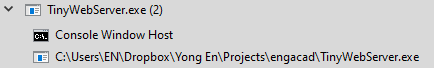
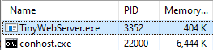
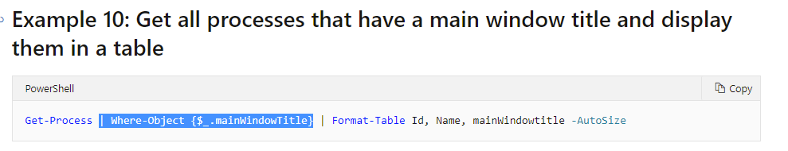
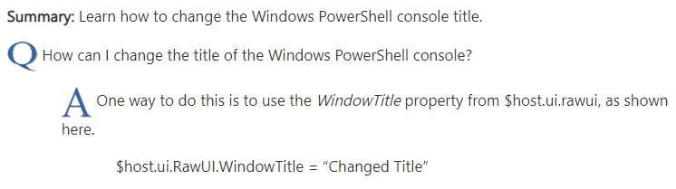

TinyWebServer
So originally I was using a precompiled exe file called "TinyWebServer.exe"
to create a server on my local Windows machine.
This file is actually the compiled version of my fork of "win32-c-http" by aaronryank.
Here is a link to the repository.
https://github.com/angyongen/win32-c-http
However, I got some warnings from GitHub through my email
telling me that I should not distribute binary files through Github Pages.
This is what it said:
"The page build completed successfully, but returned the following warning for the `main` branch:
It looks like you're using GitHub Pages to distribute binary files. We strongly suggest that you use releases to ship projects on GitHub. Releases are GitHub's way of packaging and providing software to your users. You can think of it as a replacement to using downloads to provide software. We found the following file(s) which may be a good candidate for releases: TinyWebServer.exe. For more information, see https://docs.github.com/github/administering-a-repository/about-releases."
Fair enough, I guess.
So, I set about making a replacement that is completely in source code and is easy to run. Scripting languages seemed like a good choice. I remembered that Powershell supported Microsoft .NET classes which probably have the ability to create network sockets and so I thought it could be possible to create the web server there.
It turned out to be easier than I thought.
I stumbled across this article "Building a web server with PowerShell" which mentioned about the System.Net.HttpListener class. After I learnt how to use it, I created a hybrid batch + powershell script so that I can run it by simply opening the file. This is because for some reason, my computer does not run powershell scripts on double click
Unfortunately, this created some problems. As I said, before this i was using an exe file. A nice thing about the compiled application is that I can close it by using the image name. I need to close the application when I am updating the html files and reopen it after I am done. In this case, the image name is "TinyWebServer.exe"
 However, now that i switched from using exe file to batch powershell hybrid, the image name will be the interpreter executable instead. So, "cmd.exe" and "powershell.exe"


It would not be possible to use the image name to distinguish between a regular script and my TinyWebServer script.
Looking at the Get-Process command, another thing it can use to distinguish between processes is the window title.
So I search up how to change the window title

And with that I finally have a working TinyWebServer.bat!
You can look at the code here